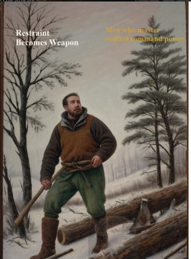
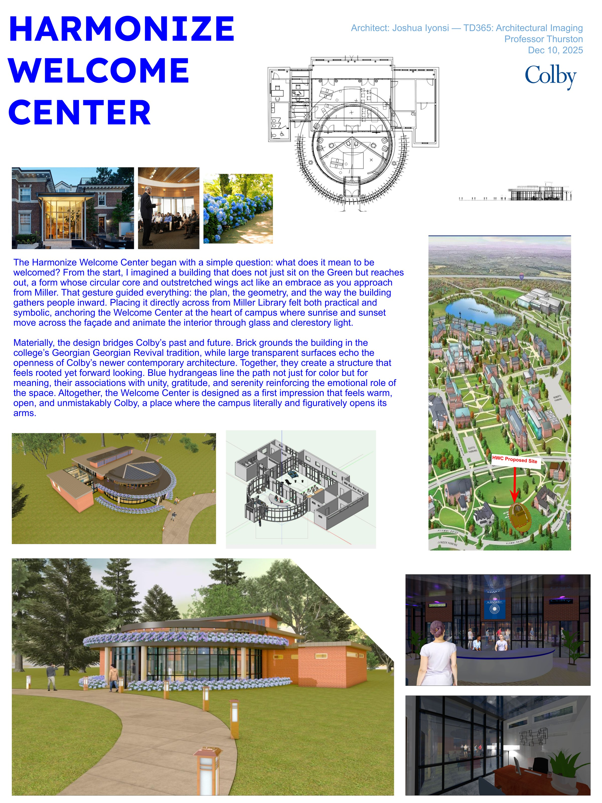

Takes a raw prompt and rewrites it using prompt engineering patterns. Built fast as a prototype with significant AI-assisted development. The point was to test whether restructuring raw prompts into engineered form actually changes output quality.
I build systems that replace manual work
in content, marketing, and operations.
I build pipelines that eliminate repetitive grunt work. Instead of manually handling research, drafting, formatting, and scheduling every single day, I write full-stack code and configure self-hosted infrastructure to turn those repeated friction points into automated systems.
The main project is AMD (Alpha Mindset Daily), an automated Instagram pipeline that generates the image, writes the caption, and prepares the post. The only manual step is approval. Stack is n8n, GPT-4.1, and Stable Diffusion running on my own hardware.
I've also shipped PromptForge, a tool that rewrites prompts using established engineering patterns, and PipBuddy, a Chrome extension live on the Web Store.
I am looking for full-time engineering and automation roles where the mission is turning manual operations into software.
A fully automated Instagram pipeline. AMD generates the image, writes the caption, formats the post, and routes it through an approval step. Once approved, it publishes through the Meta Graph API.

Most content workflows are repetitive labor. Research, drafting, formatting, scheduling, posting.
~80%AMD removes that. Approval is the only step that requires a person.
Takes a raw prompt and rewrites it using prompt engineering patterns. Built fast as a prototype with significant AI-assisted development. The point was to test whether restructuring raw prompts into engineered form actually changes output quality.
Chrome extension I built, packaged, and shipped to the Chrome Web Store. The full ship and deploy loop end to end.
Course project for TD365: Architectural Imaging at Colby (Prof. Jim Thurston, Fall 2025). Designed and modeled a proposed welcome center sited across from Miller Library, drawing the campus inward through a circular core and outstretched wings. Built in Vectorworks 3D.
The project opened a Colby News feature on the course: "Technical Thinking and Creativity Meld in Architecture Course".
"Every decision affects the structure, the flow, and how people experience the space."— Colby News, January 2026
Same way I think about systems. The design problems just look different.

B.A. in Computer Science from Colby College and former NESCAC defensive lineman.
Whether I am deploying Chrome extensions, managing dockerized workflows on local hardware, or modeling 3D structures, my approach is grounded in a simple rule: faith without function is fantasy.
I am available immediately for full-time technical roles.